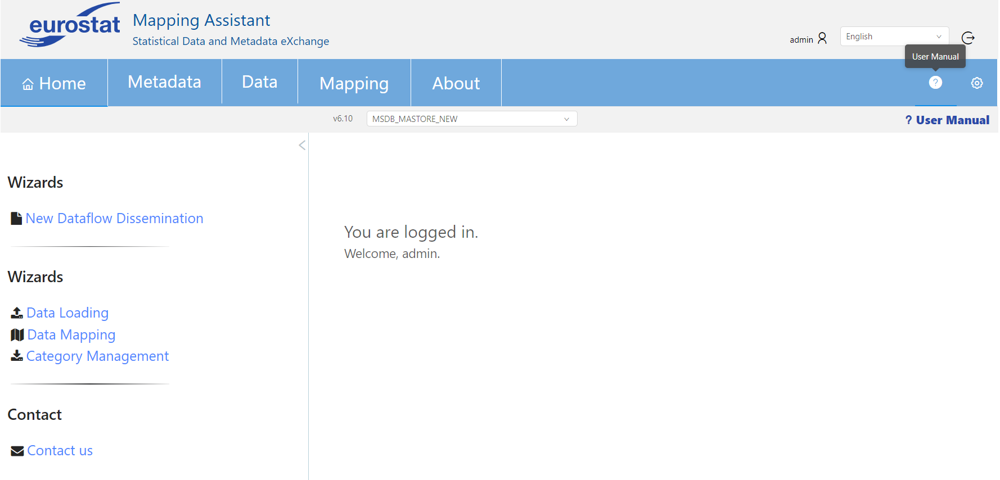
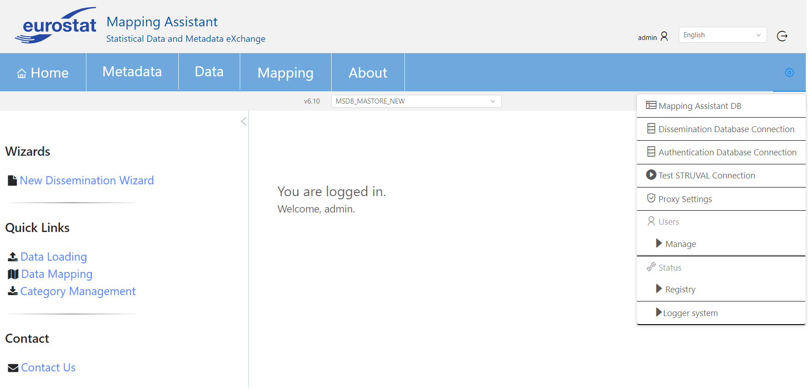

SDMX RI Mapping Assistant Web application (MAWEB) is a React based application that communicates with Mapping Assistant Web Service. The purpose of this document is to provide guidance to people on how to use the Mapping Assistant Web Application and to describe all the functionalities it supports.
This user manual aims at providing an insight on the proper use of Mapping Assistant Web Application. In order to achieve this purpose, it contains a comprehensive description of the user interface (UI) for screens that are available for Admin as well as screens for non-admin users. For the sake of simplicity, this document contains two sections for admin and non-admin screens, in order to help a user to easily locate the section that corresponds to his/her role.
This end user manual is accessible through MAWEB using the two buttons with the question mark icon on the upper right side. The button in the main navigation bar, with the tooltip "User Manual", opens in a new tab the user manual starting from the beginning. Whereas, the button below with the blue text, opens the manual for the corresponding screen. For instance, if the user navigates to Dataset screen (Data -> Dataset), then the text of the button will change to Dataset and if the user presses it, the manual for the Dataset screen will be opened in a separate browser tab.

If you are a user, when you open the application you should log in with credentials provided by Admin. When a user logs in successfully, it enters the home screen and the Web App automatically selects (from the central dropdown under navigation bar) the default mapping store according to his/her details and displays the version of the mapping store. If there is no default store in user's details, then the mapping store needs to be manually selected.
If you are an Admin user, the page AUTHDB_CONFIGURATION describes the AuthDB configuration screen that you should read when you open Mapping Assistant Web Application for the first time.
On the right side of the main navigation menu, there is a gear icon which is enabled only for Admin user and there has a submenu with a number of options.

These options are (click to read more details for each page) :
All the below screens are accessible both for admin and non-admin users.
On the left sidebar of the home screen there are wizards with the following functionalities:
and quick links for the following:
For details please see MAPPING_SETS
This screen displays the version of MAWEB and the version of the selected mapping store.